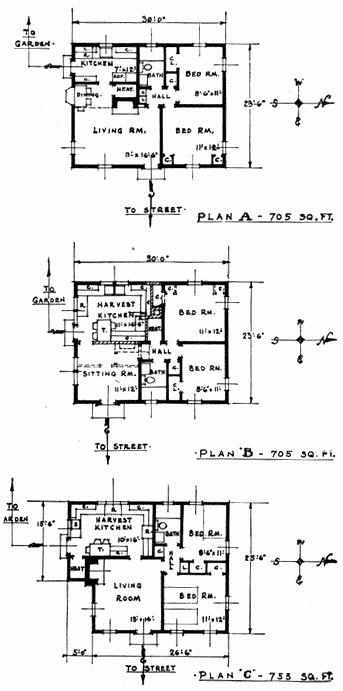

TODAY practically all houses are designed for suburban living - not country living. A suburban house is simply an expanded apartment. No provision is made for the more productive kind of life you can live in the country.
For instance, if you have a garden or chickens or fruit trees and most certainly if you are going to have livestock, you'll find that the small kitchen of 'the suburban house is totally inadequate. If you're going to have a laundry or you want to start your seedlings indoors or you plan on a quick freezer, you'll find no provision for these in the usual suburban house.
The fundamental differences between the ordinary suburban house and a house that's really satisfactory for productive country living or a small farming operation is illustrated in the three floor plans at the right.
The smaller the house the more difficult it is to provide space for homestead activities. Thus we asked John Whitney, R.A., an architect who specializes in country houses, to take a good small suburban house and show how approximately the same floor area might be laid out in a productive country home.
Note these plans are about minimum - one story, four rooms, with heater space instead of a basement. Ordinarily if 10 % of a house is "waste space" (hall area), the plan is considered satisfactory. Hall area in these plans is only 2 %!
PLAN A: (705 sq. ft.) Here is an efficient suburban house well planned for that type of living. Note that the kitchen is the small apartment house type. Living room is large.
PLAN B: (705 sq. ft.) This is the same basic plan as "A" achieved by turning "A" up-side-down and reversing ft. (Dotted lines show eliminations.) The living-room becomes a "Harvest Kitchen" with heater space, chimney, and bedroom closet off one end thereby eliminating two small closets in larger bedroom and gaining 8 square feet of valuable wall area for dining in the enlarged kitchen. Heat and chimney area of Plan "A" becomes smaller sitting-room. By reversing living-room and kitchen in most suburban house plans you have a better country layout.
PLAN C: (753 sq. ft.) This is an ideal small homestead. By adding 48 square feet, 76 square feet are gained for the "Harvest Kitchen." Here is room for all food preserving activities plus laundry. The living room is 182 square feet compared with 181.5 square feet in Plan "A". Bedrooms are same size in both "A" and "C". By changing the comer closets in Plan "A" there is an additional gain of 8 square feet plus wall space.
|
 |
|
|